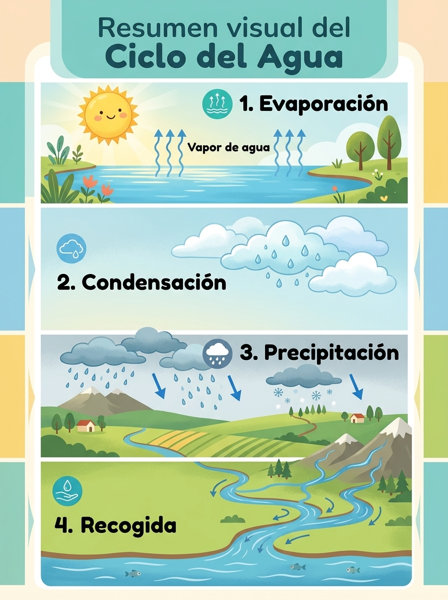

2. El ciclo del agua paso a paso
El agua de nuestro planeta nunca se está quieta: siempre realiza un viaje continuo conocido como El Ciclo del Agua. Las cuatro fases principales son:
-Evaporación: El sol calienta el agua y la transforma en vapor.
-Condensación: El vapor sube al cielo y forma las nubes.
-Precipitación: Las nubes se enfrían y el agua cae en forma de lluvia, nieve o granizo.
-Recogida: El agua vuelve a los ríos, mares y acuíferos subterráneos."
